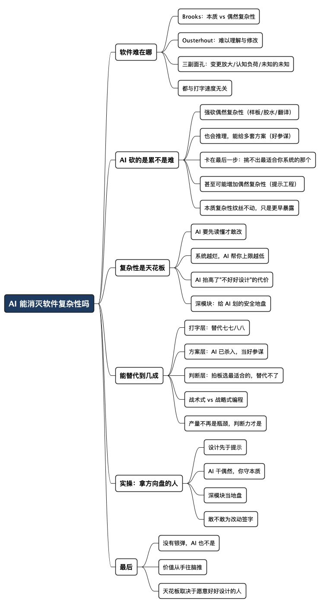

重读软件设计的哲学：AI 能替我们把复杂性消灭掉吗
Posted on 日 19 7月 2026 in AI
| Abstract | 重读软件设计的哲学：AI 能替我们把复杂性消灭掉吗 |
|---|---|
| Authors | Walter Fan |
| Category | learning note |
| Version | v1.0 |
| Updated | 2026-07-19 |
| License | CC-BY-NC-ND 4.0 |
前几天我让 AI 给一个老服务加个小功能。它几分钟就写好了，代码看着还挺漂亮——命名规范、注释齐全、单元测试也带上了。我很满意，直到我打算把它合进主干。
那一刻我卡住了：这段代码会不会踩到别的模块？那个我三年前埋的坑，它知道吗？改了这里，线上那条老链路会不会半夜给我打电话？AI 写代码只花了三分钟，我盯着它读懂、评估、决定敢不敢上，花了半个小时。
这半个小时，就是这篇文章要聊的东西。AI 让"写代码"变快了，但它没让"改一个系统而不搞砸"变简单。 而后者，恰恰是软件开发真正难的地方。
- 这篇文章想说清楚一件事：AI 早就不只是打字快了——它会推理、能一口气给你好几个方案和选择。但它还砍不动"理解与修改一个具体系统"的难，尤其是在一堆合理方案里挑出最适合你这个系统的那个。
- 顺便回答一个大家都关心的问题：AI 到底能在多大程度上替代程序员？我的答案是——它替代的是敲键盘、甚至出主意的你，替代不了那个拍板"就用这个"的你。
先说清楚：软件到底难在哪
要聊 AI 能不能解决软件的"难"，得先说清楚"难"是什么。这里有两位老先生绕不过去。
第一位是 Fred Brooks，1986 年那篇《没有银弹》（No Silver Bullet）。他把软件的复杂性劈成两半：
- 本质复杂性（essential complexity）：问题本身要求的难。用户就是要程序干 30 件事，那这 30 件事一件都少不了。业务规则、合规要求、真实世界里各种恶心的边界情况——这些你删不掉，只能想办法把它们表达清楚。
- 偶然复杂性（accidental complexity）：我们自己给自己找的难。混乱的 API、重复的逻辑、当初说"临时先这样"结果活了三年的开关、到处泄露内部细节的模块。这部分是设计动作制造出来的，也是唯一能靠功夫稳定还掉的债。
Brooks 的结论很扎心：工具再牛，砍的都是偶然复杂性；本质复杂性纹丝不动，而它才是大头。所以他说，别指望有哪一个发明能让软件开发效率一夜翻十倍。
第二位是 John Ousterhout，《软件设计的哲学》（A Philosophy of Software Design）的作者。他给"复杂性"下了一个我特别喜欢的定义：
复杂性，就是一个系统结构里所有让它"难以理解、难以修改"的东西。
注意——不是代码多，不是数学难，而是你改一处，心里没底会牵动哪些地方。
Ousterhout 说复杂性有三副面孔，你一定都见过：
| 面孔 | 通俗讲 | 现场感受 |
|---|---|---|
| 变更放大（change amplification） | 一个小改动，逼你在十个地方跟着改 | "就加个字段，怎么动了半个仓库" |
| 认知负荷（cognitive load） | 要安全改一行，脑子里得同时装太多东西 | "改这里我得先想明白那五个前提" |
| 未知的未知（unknown unknowns） | 你根本不知道该改哪、会影响谁 | "上线后才发现还有个地方也在用它" |
你注意到没有——这三样，没一样跟打字速度有关系。 它们全是关于"理解与判断"的。而这恰恰是今天 AI 的软肋所在：它能读、能推理、能给你列出三五种改法，但要它笃定地说"针对你这个系统、这些约束，第三种最合适"，它就没底了。
AI 砍掉的是累，不是难
现在把两位老先生的框架叠在一起看，AI 编程的位置一下子就清楚了。
AI 是一台极其强悍的"偶然复杂性收割机"。样板代码、模板、胶水逻辑、把需求翻译成某门语言的语法细节——这些本来就是 Brooks 说的"偶然"部分，AI 干得又快又好，比高级语言、版本控制、IDE 当年的贡献只多不少。这是实打实的进步，我不抬杠。
而且我得替 AI 说句公道话：它早就不只是个打字快的工具了。 你问它"这个模块该怎么设计"，它能给你讲清楚利弊，能一口气摆出三四种方案——用策略模式还是直接内联、加缓存还是不加、拆微服务还是留在单体里，它都能推理得头头是道，甚至比不少工程师想得还全。在"生成选项"和"讲清道理"这两件事上，它是真的强。
但它卡在最后一步：从这一堆合理的方案里，挑出最适合你这个系统的那一个。 因为"最适合"不是一道有标准答案的题——它取决于你的团队水平、历史包袱、上线时间、这个模块未来三年会往哪长、隔壁那个服务的脾气……这些散落在代码之外、只活在你脑子里和团队默契里的约束，AI 看不全，也就权衡不准。它能给你三个门，但推开哪扇门要担后果的，还是你。
再说另一个问题：AI 生成的，说到底还是程序员本来也会写的那种代码。 从这个角度看，它并没有降低"解决方案里的复杂性"，它只是让你更快地把这些复杂性打出来、更快地把几种可能摆到你面前。
甚至有个更刻薄的说法（我觉得有点道理）：AI 反而可能增加偶然复杂性。因为它给"怎么把需求说清楚"这件事,又加了一层新活儿——提示工程、上下文工程。你现在不光要想清楚要什么，还得想清楚"怎么跟模型说它才不会理解歪"。这活儿一点不比写代码轻松。
至于本质复杂性？只要你的问题本身不是"处理语言模型"，那语言模型就跟这个问题的本质难度没半点关系。"预测下周天气"这件事的难，藏在气象、数据、假设里，跟大模型一点关系没有。AI 帮不了你把这部分变简单。
它能帮的，是让你更快地撞见本质复杂性——而且往往是以那种"猴爪许愿"式的、"这不是我想要的"的方式撞见。你以为需求很清楚，AI 唰唰给你实现了，跑起来才发现：哦，原来这里还有个边界情况我压根没想过。这种"提前暴露",算是好事，但它是把难题提前摆到你面前，不是替你解决了难题。
一句话：AI 让你打字打得飞快，也让你更快发现自己没想清楚。
前者是效率，后者是照妖镜。
"复杂性是天花板"——这句话我越想越对
我读到 The Next Web 上一篇讲"AI 时代软件设计"的文章，里面一句话把我点醒了：
一个系统的复杂性，就是你能把多少工作安全交给机器的天花板。
逻辑是这样的：一个模型要想安全地改一段代码，它得先读懂这段代码——读懂它在整个系统里的位置、依赖、隐含约定。而"读懂并且不搞砸地改"这件事的难度，恰恰就是 Ousterhout 定义的复杂性。
所以结论反过来了，而且反得很有意思：
- 如果你的系统是一堆"大泥球"（big ball of mud），到处是变更放大、认知负荷、未知的未知——那 AI 帮你的上限就很低。它读不透，也不敢大改，你还得全程盯着、擦屁股。
- 如果你的系统模块划分清爽、接口简单、信息藏得好——那 AI 能安全接手的部分就多得多。
AI 不是让"好好设计"变得可有可无，恰恰相反，它抬高了"不好好设计"的代价。 过去代码烂，主要是苦了后来接手的人；现在代码烂，连 AI 都带不动你，你等于把最强的助手也废了一半。
这就把 Ousterhout 那个核心工具——深模块（deep module）——的价值又拔高了一层。所谓深模块，就是"接口简单、实现强大"：外面的人看到的是一个干净利落的入口，复杂的脏活累活全被藏在里面。他画了个比喻：把模块想象成一个矩形，面积是它的功能量，上边长是接口的复杂度。好模块是又高又窄的矩形——功能巨大，接口极小。
对人来说，深模块降低认知负荷；对 AI 来说，深模块划出了一块它能放心操作、不用理解全世界的领地。同一个好设计，过去是为了让同事少骂你，现在顺便也让 AI 更好用。 好东西的好处，往往是复利的。
那 AI 到底能替代程序员到几成
聊到这，可以正面回答标题里那个问题了。我把程序员干的活，粗暴地分成三层：
- 打字层：把已经想清楚的东西变成代码。语法、样板、模板、常见套路、写测试、查文档、改 bug 的机械部分……这一层，AI 替代得七七八八，而且会越来越多。
- 方案层：给出选择、分析利弊、罗列几种可行设计。这一层过去也算"人的地盘"，但 AI 现在已经杀进来了——它能推理、能对比、能把 A 方案和 B 方案的取舍讲得清清楚楚。它是个很称职的"参谋"，甚至是个能提三套预案的参谋。
- 判断层：在一堆合理方案里拍板选一个，并为后果负责。想清楚到底要做什么、系统该长成什么样、这个改动的爆炸半径有多大、这里该抽象还是该内联、哪些复杂性该"往下拉"藏进模块里。这一层，是 Ousterhout 说的"战略式编程"（strategic programming）——目标不是"能跑就行"，而是"做出一个恰好也能跑的好设计"。
AI 已经把前两层啃下大半。参谋当得越来越好，选项给得越来越全。可它偏偏卡在最后一层：参谋能列出三条路，但走哪条、走错了谁负责，还得主帅来定。 而"哪条最合适"这个判断，依赖的正是那些散在代码之外的东西——团队、包袱、时限、系统未来的走向。这些 AI 看不全，也就不敢替你签字。
Ousterhout 特意区分过两种程序员心态：
- 战术式编程（tactical programming）：只想着"把这个功能弄出来跑通"。每次都欠一点点债，日积月累，系统慢慢烂成泥球。
- 战略式编程（strategic programming）：把"好设计"当第一目标，能跑只是顺带的结果。
AI 天生是个战术高手：你给它一个明确任务，它极快地给你一个能跑的实现，甚至能给你好几个能跑的实现让你挑。但它没有"我为这个系统的长期健康负责"的动机，也不真正拥有那种"这么设计三年后会后悔"的痛感——那种痛感是我半夜被线上告警叫醒、是我维护过一个前人留下的泥球、是我做错过取舍之后攒下来的。参谋不用为战败负责，主帅要。
所以我的判断是：
AI 能替代"打字的程序员"，也能当好"出主意的参谋"，唯独替代不了"拍板的那个人"。
你过去的价值如果只是"能把代码敲出来"，那确实危险；如果你的价值是"在几条都说得通的路里，知道该走哪条、以及走了会怎样"，那 AI 更像是给你配了一队不知疲倦、还挺能出主意的参谋。
我最近让 AI 基于老项目做了一个新的系统，我把设计写好，代码基本都交给 AI 来写，因为我用 Openspec 写的设计还不够详细，实现的代码功能看起来实现的不错，也能跑起来，但是在做关键代码审查时发现它依然踩了不少坑，犯了之前我们曾经犯过的错，我的反省是一是设计太粗，二是让 AI 一次干得太多，还是要遵循敏捷开发的思想，小步快走，AI 实现了顶多一千行代码，人就得来看看，验收测试能不能过，结构风格能不能看得过，有没有踩坑。
而且别忘了那个"照妖镜"效应：AI 让写代码变便宜之后，团队里"想清楚"的能力会变成更稀缺、更值钱的东西。就像文字生产成本趋近于零之后，竞争就从"码字"转向了"思想质量"。代码也一样——产量不再是瓶颈，判断力才是。
实操：在 AI 时代怎么当好那个"拿方向盘的人"
不必一刀切地"全交给 AI"或"死活自己写"。我自己更偏向一个"人主导设计、AI 助攻实现"的流程：
-
设计先于提示，人先想清楚
打开 AI 之前，先自己回答：这个模块的职责是什么？接口应该多简单？哪些复杂性要往下拉、藏进实现里？这一步别外包——你把设计想糊涂了，AI 只会帮你把糊涂放大十倍。 -
让 AI 干偶然复杂性，你守本质复杂性
样板、胶水、翻译、测试骨架，尽管交给 AI。但"这个业务边界到底怎么处理""这个抽象对不对"这类本质难题，你得亲自啃，最多让 AI 当个陪你想的伙伴。 -
把深模块当成给 AI 划的地盘
有意识地维护"接口简单、实现强大"的模块边界。边界越清楚，AI 能安全接手的范围越大，你要盯的地方越少。烂设计不只坑同事，现在也拖累你的 AI 助手。 -
生成之后，判断层必须是你
- 这段代码的爆炸半径有多大？会牵动哪些我没提到的地方？
- 它是不是悄悄增加了偶然复杂性（多了个开关？多了层不必要的抽象）？
- 三年后接手的人（可能就是我自己）读得懂吗？
- 大声问自己一句：我敢不敢为这个改动的后果签字？
一句话：
AI 负责让代码更快出现，你负责让系统不因此变得更难懂。
前者是它的活，后者是你的责任，别搞混。
最后一句
重读 Ousterhout，我最大的感触是：他四十年前就把话说透了——软件唯一真正的敌人是复杂性，而复杂性关乎"理解与修改"，不关乎"打字快慢"。AI 恰好只在打字快慢上帮了大忙。
所以那个流行的期待——"AI 会把软件开发的难题一并解决掉"——大概率要落空。银弹从 1986 年到现在都没出现，AI 也不是。它更像是一台超强的偶然复杂性收割机、外加一个思路开阔的参谋：把累活揽走了，把几套方案也帮你摆好了，可最难的那道题——"针对你这个系统，到底哪个才对"——还是原封不动地、甚至更早地，摆回你面前。
这不算坏消息。它只是把程序员的价值，从"手"往"脑"又推了一把。能被 AI 替代的，从来不在键盘上，甚至不在"能不能想出办法"上；替代不了的，在你能不能从几个都说得通的办法里，挑出最适合这个系统的那一个，并敢为它签字。
复杂性是天花板。而决定这个天花板有多高的，还是那个愿意好好设计的人。
全文思维导图
@startmindmap
<style>
mindmapDiagram {
node {
BackgroundColor #F8F9FA
RoundCorner 10
Padding 10
FontSize 13
}
:depth(0) {
BackgroundColor #1E3A5F
FontColor white
FontSize 18
FontStyle bold
}
:depth(1) {
FontSize 15
FontStyle bold
}
:depth(2) {
FontSize 13
}
}
</style>
* AI 能消灭软件复杂性吗
** 软件难在哪
*** Brooks：本质 vs 偶然复杂性
*** Ousterhout：难以理解与修改
*** 三副面孔：变更放大/认知负荷/未知的未知
*** 都与打字速度无关
** AI 砍的是累不是难
*** 强砍偶然复杂性（样板/胶水/翻译）
*** 也会推理，能给多套方案（好参谋）
*** 卡在最后一步：挑不出最适合你系统的那个
*** 甚至可能增加偶然复杂性（提示工程）
*** 本质复杂性纹丝不动，只是更早暴露
** 复杂性是天花板
*** AI 要先读懂才敢改
*** 系统越烂，AI 帮你上限越低
*** AI 抬高了"不好好设计"的代价
*** 深模块：给 AI 划的安全地盘
** 能替代到几成
*** 打字层：替代七七八八
*** 方案层：AI 已杀入，当好参谋
*** 判断层：拍板选最适合的，替代不了
*** 战术式 vs 战略式编程
*** 产量不再是瓶颈，判断力才是
** 实操：拿方向盘的人
*** 设计先于提示
*** AI 干偶然，你守本质
*** 深模块当地盘
*** 敢不敢为改动签字
** 最后
*** 没有银弹，AI 也不是
*** 价值从手往脑推
*** 天花板取决于愿意好好设计的人
@endmindmap

本作品采用知识共享署名-非商业性使用-禁止演绎 4.0 国际许可协议进行许可。 欢迎在我的个人网站 https://www.fanyamin.com 访问原文并评论。